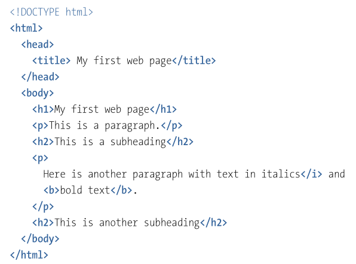

A Hypertext Markup Language (HTML), juntamente com a Cascading Style Language (CSS) e Javascript são as linguagens mais importantes no desenvolvimento frontend. A linguagem é utilizada para estruturar páginas web, além de definir o significado semântico de elementos individuais em uma página web. A linguagem HTML passou por diversas versões ao longo dos anos, sendo elas:
Para definir os componentes de uma página, utiliza-se elementos, que podem ser individualizados por meio de atributos. Cada elemento consiste de uma tag de abertura e uma tag de fechamento. A tag h1, por exemplo, é utilizada para um cabeçalho de primeiro nível. O código abaixo apresenta a estrutura de uma página web simples:

O código acima apresenta alguns dos elementos básicos utilizados na estrutura de uma página HTML, sendo eles:
Informações adicionais podem ser passadas passadas aos elementos por meio de atributos. Os atributos são posicionados na tag de abertura de um elemento e consistem de um nome e um valor, separados por um sinal de igual. Um exemplo do uso de um atributo é na tag a, que usa o atributo href para definir uma url dentro de uma página HTML:

Em HTML, várias tags podem ser utilizadas para fazer a formatação de texto. A tag h, por exemplo, define cabeçalhos, variando do tamanho 1 (maior) ao tamanho 6 (menor). Além disso, a tag p define parágrafos em uma página, e tags como b e i podem destacar o texto, deixando-o negrito ou itálico. Também há tags como em, strong, sup e sub, que podem destacar o texto de outras maneiras, como deixá-lo sobrescrito e o elemento br, que introduz uma quebra de linha.
Há três diferentes tipos de lista em HTML: listas desordenadas, listas ordenadas e listas de definições. É possível também aninhar listas. O código abaixo mostra a definição de cada um dos tipos de lista:


Existem diversos tipos de links em uma página web, que podem ser diferenciados entre links externos, que levam a uma locação fora do website em questão, links relativos, que podem levar a uma outra página dentro do mesmo website e links internos, que podem pular para uma parte diferente da mesma página web. A tag a é utilizada para definir todos os tipos de link mencionados e o atributo href especifica a URL para a qual um link leva.
Para adicionar uma imagem a uma página HTML, utiliza-se a tag img. A tag em questão é vazia, ou seja, não possui uma tag de fechamento. A manipulação de elementos deste tipo é feita somente por meio de seus atributos. O atrubuto src, por exemplo, define a fonte de uma imagem e o atributo alt é utilizado como uma alternativa para leitores de tela ou para quando uma imagem não puder ser exibida.
O uso de formulários na internet é comum. HTML oferece uma coleção de elementos que permitem a elaboração de formulários web. Alguns elementos como campos de campos de texto, campos de senha, áreas de texto, checkboxes, listas de seleção e botões.

A imagem acima apresenta um formulário feito com HTML, consistindo das diversas tags que HTML oferece para este fim, como as tags input, textarea, label, entre outras.